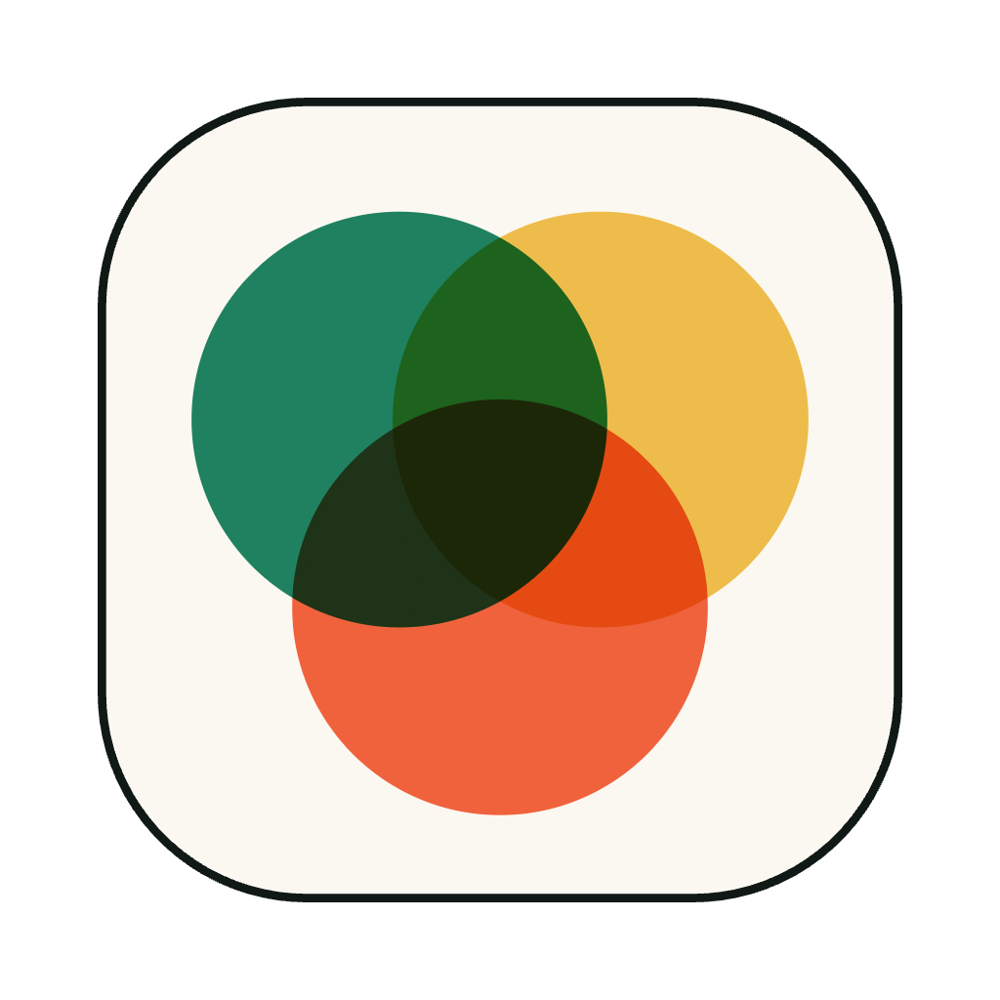

Update content
Edit src/content/docs/index.mdx to see this page change.

Rasterize docsCongrats on setting up a new Starlight project!

Edit src/content/docs/index.mdx to see this page change.
Add Markdown or MDX files to src/content/docs to create new pages.
Learn more in the Starlight Docs.
Delete template: splash in src/content/docs/index.mdx to display a sidebar on this page.
Edit your sidebar and other config in astro.config.mjs.
A guide in my new Starlight docs site.
Guides lead a user through a specific task they want to accomplish, often with a sequence of steps. Writing a good guide requires thinking about what your users are trying to do.
Note
Starlight looks for .md or .mdx files in the src/content/docs/ directory. Each file is exposed as a route based on its file name.
All commands are run from the root of the project, from a terminal:
A reference page in my new Starlight docs site.
Reference pages are ideal for outlining how things work in terse and clear terms. Less concerned with telling a story or addressing a specific use case, they should give a comprehensive outline of what you're documenting.
| Command | Action |
|---|---|
npm install | Installs dependencies |
npm run dev | Starts local dev server at localhost:4321 |
npm run build | Build your production site to ./dist/ |
npm run preview | Preview your build locally, before deploying |
Caution
Static assets, like favicons, can be placed in the public/ directory.